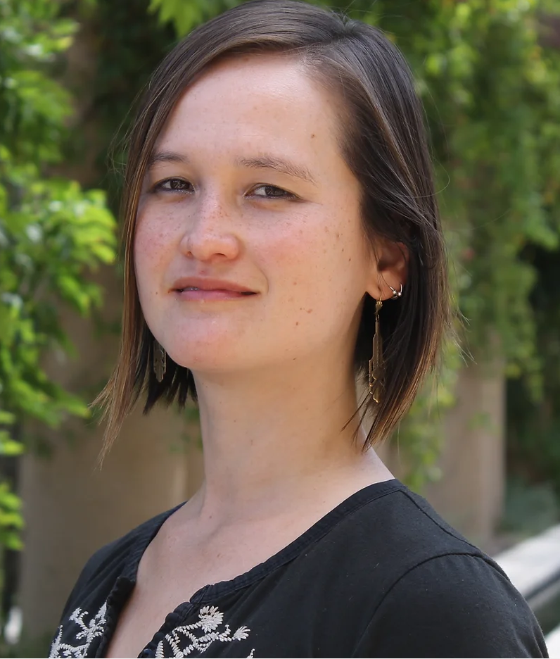

Leonardo @ VINCI Panel Discussion
Generations of Generative Art: Are We Witnessing a New Movement?
Leonardo/ISAST co-presents a panel at the VINCI Festival in Hangzhou, China on November 4. From Harold Cohen’s pioneering AI painter AARON to AI playing Socrates, panelists draw on works published in Leonardo to ask where creativity resides when humans and machines make art together. Join us in Hangzhou, or learn more and register.
Participants
Panel Moderators

Vanessa Chang
Leonardo

James She
VINCI 2026 and The Hong Kong University of Science and Technology (Guangzhou)
Panel Members
Kang Zhang
Jürgen Hagler
2 more to come!
Abstract
Long before “generative AI” entered everyday speech, artists were building computational systems that make art. This panel traces that lineage through works published in Leonardo, the journal that has documented art, science, and technology collaboration since 1968: Harold Cohen's decades-long collaboration with AARON, one of the first AI painting programs; a project that uses image-generating AI to imagine a world drowning in data and rising seas; and dialogues in which AI plays Socrates to explore the nature of living structure. From these, invited panelists will consider: Where does creativity reside when art emerges from human and machine collaboration? Can artificial imagination help us face crises that technology helps create? And how can we move from artificial intelligence toward something like augmented wisdom?
Moderator Biographies
Vanessa Chang
Vanessa Chang is Director of Programs at Leonardo, the International Society for the Arts, Sciences, and Technology, where she develops transdisciplinary programs connecting artists, scientists, and technologists. She has curated exhibitions and public programs at SMOMA, the Beall Center for Art + Technology, and Fort Mason Center for Arts and Culture, and was lead curator with CODAME Art & Tech. Her writing has appeared in Slate, Wired, Noema, and the Los Angeles Review of Books, and her work has been featured in Art in America, Science Magazine, and On the Media, among other venues. Her first book, The Body Digital: A Brief History of Humans and Machines from Cuckoo Clocks to ChatGPT, was published in 2025. She earned a Ph.D. in Modern Thought and Literature from Stanford University.
James She
James She is a university professor and media artist, tenured Associate Professor of Computational Media and Art at The Hong Kong University of Science and Technology (Guangzhou) with a joint appointment in the Division of Arts and Machine Creativity at The Hong Kong University of Science and Technology. Working with advanced AI, multimedia computing, immersive systems and IoT, he translates code and datasets into evocative artistic, cultural and sensory experiences spanning art, heritage preservation, education, media and sports. He is Associate Editor of Leonardo (MIT Press, 2026–present), previously serving in the same role for IEEE TMM and ACM TOMM; his research features at ACM Multimedia, SIGGRAPH Asia, ISEA and in leading journals including Leonardo, ACM TOMM, ACM JOCCH, IEEE TMM, IEEE TMC and IEEE IoT. As a 2020 visiting artist at Qatar Museums’ Fire Station, he developed the region’s first AI-driven exhibition exploring cultural heritage and sport, with artworks exhibited worldwide. A frequent invited speaker at global art‑tech events such as the Islamic Arts Biennale (2023), Silesian Science Festival (2025) and Hong Kong AI Art Festival (2025), he leads student teams from The Hong Kong University of Science and Technology and The Hong Kong University of Science and Technology (Guangzhou) to present creative work at the Ars Electronica Campus Exhibit (2024–2026) to support emerging student artists’ global exposure. Discover more of James’s artistic practice here.